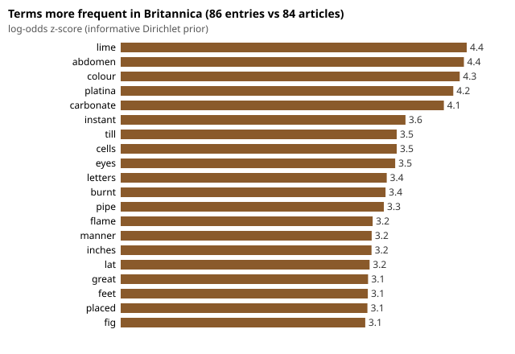
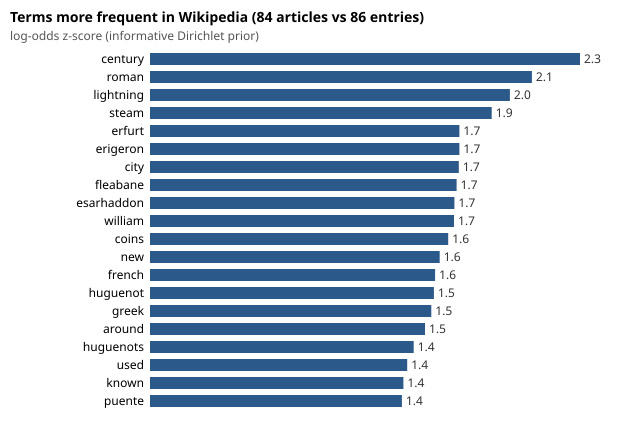

This site compares 100 historical Encyclopaedia Britannica scans with Wikipedia. Brown sections show Britannica source text, blue sections show Wikipedia source text, and grey sections show generated analysis.
| Scans | 100 (98 parsed; 2 Parse failures; status {'ok': 89, 'plate': 5, 'blank_or_sparse': 4}) |
| Entries | 241 (159 with a headword, 82 continuations, 2 joined across pages) |
| Match | mode model: 201 searched, 86 accepted, 115 rejected, 48 skipped, 0 errors. retrieval models verified |
| Compare | 86 pairs; mean top-terms Jaccard 0.0609; mean frequency cosine 0.2365; unverified Britannica tokens 0.0753 |
| LaTeX | 98 of 98 documents compiled (Tectonic 0.17.0) |
| Agent | 45 saved runs |


Matches with method "provisional_lexical" come from headword and title rules without the Nemotron embedder and reranker. They need the model check.
Britannica scans: National Library of Scotland, CC0 1.0. Wikipedia text: Wikipedia contributors, CC BY-SA 4.0, revision links on each page. Generated 2026-10-18T13:26:14+00:00.